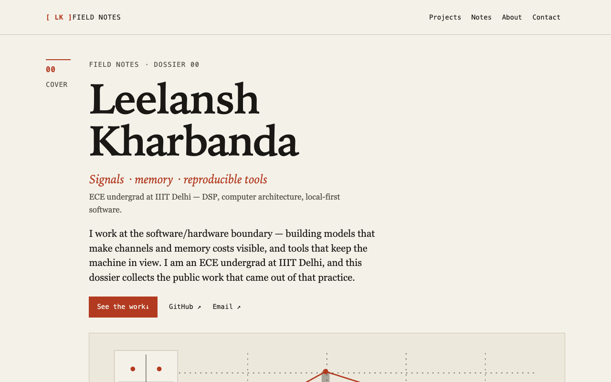
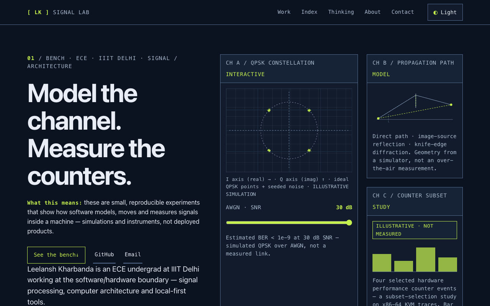
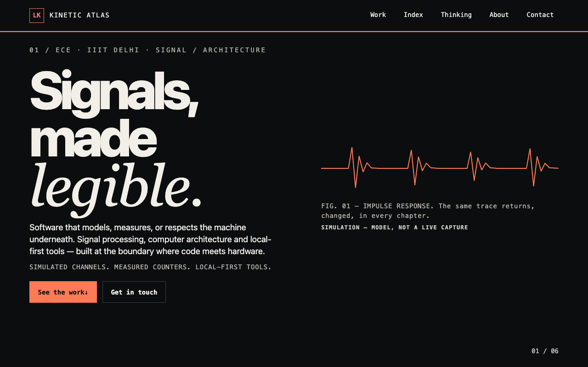
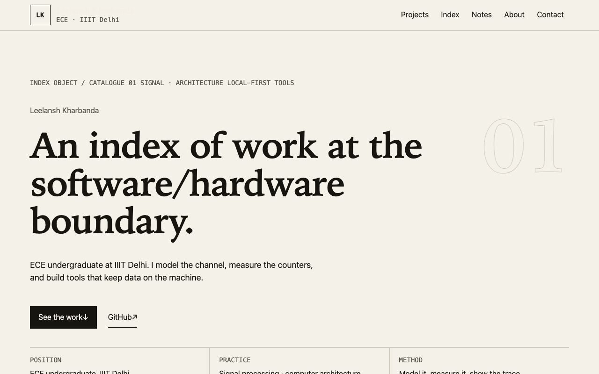

A / FIELD NOTES
Quiet editorial dossier
Warm paper, numbered annotation rails, Palatino display and figure-first case sheets. Recruiter-legible and calm.
Open Field Notes ↗All four are complete, static, and council-approved for production. Each keeps the same verified project facts and accessibility gates; they differ in art direction, not substance. Pick one, or mix and match sections.

Warm paper, numbered annotation rails, Palatino display and figure-first case sheets. Recruiter-legible and calm.
Open Field Notes ↗
Navy panels, lime telemetry, honest interactive channel model and tabbed datasheets. The most technical option.
Open Signal Lab ↗
Alternating dark and light chapters, a recurring impulse trace and scroll-linked reveals. The most immersive option.
Open Kinetic Atlas ↗
Catalogue cover, oversized statement headline, restrained accent and focus-reveal project dossiers. The most typographic option.
Open Index Object ↗